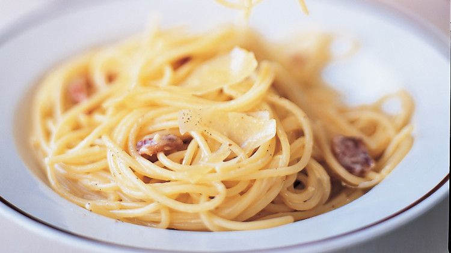
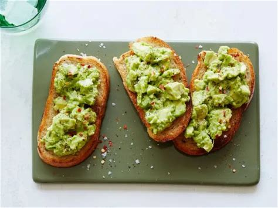
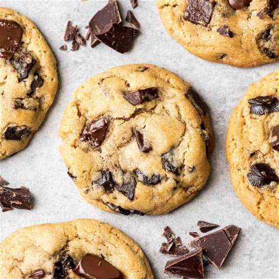
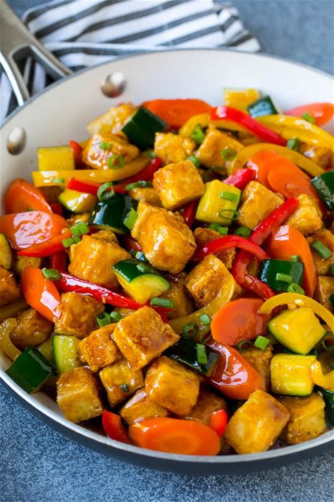

Classic Flavors, Clear Instructions, Endless Inspiration
Welcome to your new go-to kitchen companion! Whether you’re a busy home cook, a beginner building confidence, or simply craving something delicious, this collection cuts through the clutter. We’ve handpicked 5 globally beloved recipes that balance simplicity, flavor, and visual appeal. Each dish comes with foolproof instructions, pantry-friendly ingredients, and tips to find step-by-step photos online for extra guidance.
Why these recipes?
✨ They’re timeless– from Roman pasta to vegan stir-fries, these are dishes you’ll return to again and again.
✨ They’re photogenic– each has thousands of tutorial images online (just search the recipe name + "steps").
✨ They teach core skills– poaching eggs, making creamy sauces, baking perfect cookies.
A creamy Spaghetti Carbonara (no cream needed!)
Creamy, savory Roman pasta made with eggs, cheese, and crispy pork.
Serves: 4
Prep time: 10 mins | Cook time: 15 mins
Avocado Toast with runny-yolked poached eggs
A simple, nutrient-packed breakfast with creamy avocado and runny yolks.
Serves: 2
Prep time: 5 mins | Cook time: 5 mins
Chewy Chocolate Chip Cookies
Chewy-centered, crisp-edged cookies loaded with melty chocolate.
Serves: 12 cookies
Prep time: 10 mins | Cook time: 12 mins
Crispy Tofu Vegetable Stir-Fry
A 20-minute Asian-inspired vegan dish with crispy tofu and colorful veggies.
Serves: 4
Prep time: 15 mins | Cook time: 10 mins
